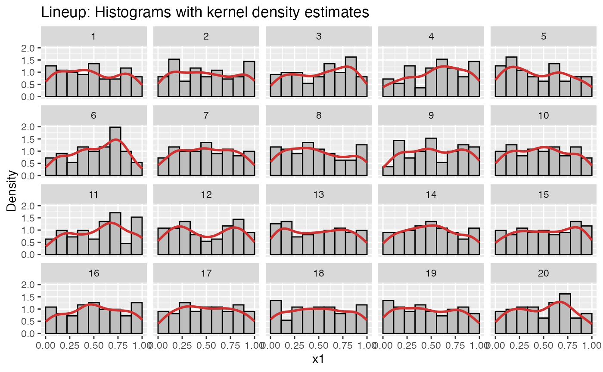

vignettes/nullabor-distributions.Rmd
nullabor-distributions.RmdThe nullabor package provides functions to visually assess distributional assumptions.
Start by specifying the distribution family under the null hypothesis. The options available are:
beta
cauchy
chi-squared
gamma
geometric
lognormal
logistic
negative binomial
binomial
normal
poisson
t
uniform
weibull
You can also specify the parameters of the distribution. This is required for uniform, beta, and binomial distributions.
The first option is to use histograms with kernel density estimates.
To test the hypothesis that the variable total_bill in
the tips dataset follows a normal distribution, we draw a
histogram lineup plot using lineup_histograms as
follows:
data(tips)
lineup_histograms(tips, "total_bill", dist = "normal")Run the decrypt code printed in the Console to see which
plot belongs to the tips data.
To instead test the hypothesis that the data follow a gamma
distribution, we use dist = "gamma":
lineup_histograms(tips, "total_bill", dist = "gamma")In some cases, we need (or want) to specify the entire distribution,
and not just the family. We then provide the distribution parameters,
using the standard format for the distribution (i.e. the same used by
r*, d*, p*, and q*
functions, where * is the distribution name).
As an example, let’s say that we want to test whether a dataset comes
from a uniform \(U(0,1)\) distribution.
First, we generate two example variables. x1 is \(U(0,1)\), but x2 is not.
example_data <- data.frame(x1 = runif(100, 0, 1),
x2 = rbeta(100, 1/2, 1/2))For the uniform distribution, the parameters are min and
max (see ?dunif). To test whether the
x1 data come from a \(U(0,1)\) distribution, we specify the
distribution parameters as follows:
lineup_histograms(example_data, "x1", dist = "uniform", params = list(min = 0, max = 1))
And for x2:
lineup_histograms(example_data, "x2", dist = "uniform", params = list(min = 0, max = 1))An alternative to histograms is to use quantile-quantile plots, in which the theoretical quantiles of the distribution are compared to the empirical quantiles from the (standardized) data. Under the null hypothesis, the points should lie along the reference line. However, some deviations in the tails are usually expected. A lineup plot is useful to see how much points can deviate from the reference line under the null hypothesis.
To create a Q-Q lineup plot using the normal distribution as the null
distribution, use lineup_qq as follows:
lineup_qq(tips, "total_bill", dist = "normal")Again, some distributions require parameters to be specified. This is done analogously to how we did it for histograms:
For both histograms and Q-Q plots, you can style the plot using
arguments for color and opacity, as well as using ggplot2
functions like theme.
Histograms:
library(ggplot2)
lineup_histograms(example_data, "x1",
dist = "uniform",
params = list(min = 0, max = 1),
color_bars = "white",
fill_bars = "#416B4B",
color_lines = "#7D5AAD"
) + theme_minimal()Q-Q plots:
lineup_qq(tips, "total_bill",
dist = "gamma",
color_points = "cyan",
color_lines = "#ED11B7",
alpha_points = 0.25) +
theme_minimal() +
theme(panel.background = element_rect(fill = "navy"),
axis.title = element_text(family = "mono", size = 14))